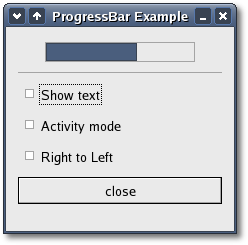

The 'orientation' argument can be one of the following values
to indicate the direction in which the progress bar moves:
Now that the progress bar has been created and the orientation set we
can use it.
void
set_fraction(double fraction);
The 'fraction' argument is the amount completed,
meaning the amount the progress bar has been filled from 0-100%. This
is
passed to the method as a real number ranging from 0 to 1.
As well as indicating the amount of progress that has occurred, the
progress bar may be set to just indicate that there is some activity.
This can be useful in situations where progress cannot be measured
against a value range. The following method indicates that some
progress
has been made.
void
pulse();
The step size of the activity indicator is set using the following
method:
void
set_pulse_step(double fraction);
When not in activity mode, the progress bar can also display a
configurable text string within its trough, using the following method:
void
set_text(const String& text);
You can turn off the display of the string by calling
Gtk::ProgessBar::set_text() again with null as the argument.
The current text setting of a progress bar can be retrieved with the
following method:
String
get_text() const;
Progress Bars are usually used with
timeouts
or
other such functions to give the illusion of multitasking. All
will employ the Gtk::ProgressBar set_fraction() or pulse() methods in
the same manner.
ProgessBar
Example
Here is an example of a progress bar updated using timeouts. This
code also shows you how to reset the progress bar.
The header file for the ProgressBar example is
<progressbar.hh>:
#include
<xfc/main.hh>
#include <xfc/gtk/progressbar.hh>
#include <xfc/gtk/window.hh>
using namespace Xfc;
class ProgressBarWindow : public Gtk::Window
{
Gtk::ProgressBar *progress_bar;
bool activity_mode;
sigc::connection timeout_connection;
protected:
bool on_timeout();
void
on_toggle_show_text();
void
on_toggle_activity_mode();
void
on_toggle_orientation();
public:
ProgressBarWindow();
~ProgressBarWindow();
};
and the source file is <progressbar.cc>:
#include
"progressbar.hh"
#include <xfc/gtk/alignment.hh>
#include <xfc/gtk/box.hh>
#include <xfc/gtk/checkbutton.hh>
#include <xfc/gtk/separator.hh>
#include <xfc/gtk/table.hh>
#include <xfc/glib/main.hh>
ProgressBarWindow::ProgressBarWindow()
: activity_mode(false)
{
set_resizable(true);
set_title("ProgressBar Example");
set_border_width(0);
Gtk::VBox *vbox = new
Gtk::VBox(false, 5);
vbox->set_border_width(10);
add(*vbox);
vbox->show();
// Create a
centering
alignment object
Gtk::Alignment *align = new
Gtk::Alignment(0.5, 0.5);
vbox->pack_start(*align,
false,false, 5);
align->show();
// Create the
GtkProgressBar
progress_bar = new
Gtk::ProgressBar;
align->add(*progress_bar);
progress_bar->show();
// Add a timer callback to
update the value of the progress bar
timeout_connection =
G::timeout_signal.connect(sigc::mem_fun(this,
&ProgressBarWindow::on_timeout), 100);
Gtk::HSeparator *separator = new
Gtk::HSeparator;
vbox->pack_start(*separator,
false, false);
separator->show();
// Add table:
rows,
columns, homogeneous = false (by default)
Gtk::Table *table = new Gtk::Table(2, 2);
vbox->pack_start(*table, false);
table->show();
// Add a check
button to
select displaying of the trough text
Gtk::CheckButton *check = new
Gtk::CheckButton("Show
text");
table->attach(*check, 0, 1, 0, 1,
Gtk::EXPAND |
Gtk::FILL, Gtk::EXPAND | Gtk::FILL, 5, 5);
check->signal_clicked().connect(sigc::mem_fun(this,
&ProgressBarWindow::on_toggle_show_text));
check->show();
// Add a check
button to
toggle activity mode
check = new
Gtk::CheckButton("Activity mode");
table->attach(*check, 0, 1, 1, 2,
Gtk::EXPAND |
Gtk::FILL, Gtk::EXPAND | Gtk::FILL, 5, 5);
check->signal_clicked().connect(sigc::mem_fun(this,
&ProgressBarWindow::on_toggle_activity_mode));
check->show();
// Add a check
button to
toggle orientation
check = new
Gtk::CheckButton("Right to Left");
table->attach(*check, 0, 1, 2, 3,
Gtk::EXPAND |
Gtk::FILL, Gtk::EXPAND | Gtk::FILL, 5, 5);
check->signal_clicked().connect(sigc::mem_fun(this,
&ProgressBarWindow::on_toggle_orientation));
check->show();
// Add a button to
exit
the program
Gtk::Button *button = new
Gtk::Button("close");
button->signal_clicked().connect(sigc::mem_fun(this,
&ProgressBarWindow::dispose));
vbox->pack_start(*button, false,
false);
// This makes it
so the
button is the default.
button->set_flags(Gtk::CAN_DEFAULT);
// This grabs this
button to be the default button. Simply hitting the "Enter" key
// will cause this button to activate.
button->grab_default();
button->show();
}
ProgressBarWindow::~ProgressBarWindow()
{
timeout_connection.disconnect();
}
bool
ProgressBarWindow::on_timeout()
{
if
(activity_mode)
progress_bar->pulse();
else
{
//
Calculate the value of the progress bar using the value range set in
the
adjustment object
double
new_value = progress_bar->get_fraction() + 0.01;
if
(new_value > 1.0)
new_value =
0.0;
// Set
the
new value
progress_bar->set_fraction(new_value);
}
// As this is a timeout slot,
return true so that it continues to get called
return true;
}
void
ProgressBarWindow::on_toggle_show_text()
{
// Toggles the text display
within the progress bar trough
String text =
progress_bar->get_text();
if (!text.empty())
progress_bar->set_text("");
else
progress_bar->set_text("some
text");
}
void
ProgressBarWindow::on_toggle_activity_mode()
{
// Toggles the activity mode
of the progress bar
activity_mode = !activity_mode;
if (activity_mode)
progress_bar->pulse();
else
progress_bar->set_fraction(0.0);
}
void
ProgressBarWindow::on_toggle_orientation()
{
// Toggles the orientation of
the progress bar
if
(progress_bar->get_orientation() == Gtk::PROGRESS_LEFT_TO_RIGHT)
progress_bar->set_orientation(Gtk::PROGRESS_RIGHT_TO_LEFT);
else
progress_bar->set_orientation(Gtk::PROGRESS_LEFT_TO_RIGHT);
}
int main (int
argc, char *argv[])
{
using namespace Main;
init(&argc, &argv);
ProgressBarWindow window;
window.signal_destroy().connect(sigc::ptr_fun(&Xfc::Main::quit));
window.show();
run();
return 0;
}
Compiling ProgressBar
If you compiled and installed XFC yourself, you will find the source
code for ProgressBar in the
<examples/howto/progressbar> source directory along with a Makefile. If
XFC came pre-installed, or you installed it from an RPM package, you
will
find the source code in the
</usr/share/doc/xfcui-X.X/examples/howto/progressbar> subdirectory. In
this case you will have to create the Makefile yourself (replace X.X
with the
version number of the libXFCui library you have installed).
To create a Makefile for ProgressBar, add the following lines to a new
text
file
and save it using the name "Makefile":
CC = g++
CFLAGS = -Wall -O2
progressbar: progressbar.cc progressbar.hh
$(CC) progressbar.cc -o progressbar $(CFLAGS)
`pkg-config xfcui-X.X --cflags --libs`
clean:
rm -f *.o progressbar
If you cut and paste these lines make sure the whitespace before $(CC)
and rm is a tab character. When you
compile and run this program you will see the following window appear:

Checking the 'Show text' check button displays the text string 'some
text' in the progress bar trough. Checking the right-to-left
check button will make the progress bar update from the right side
instead of the left. Checking the 'Activity mode' check button will
switch the progess bar into action mode. In this mode the progess bar
displays a block that moves up and down the trough at a constant rate
to indicate that some activity is occuring.